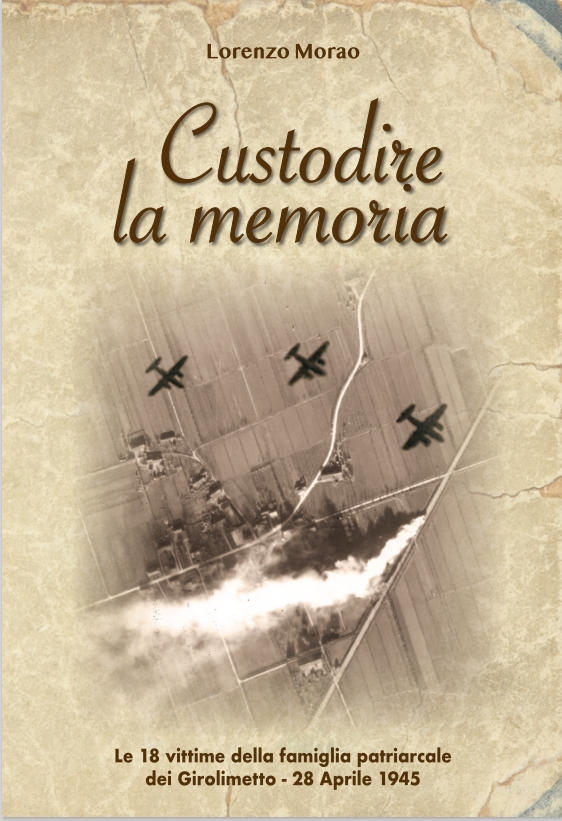
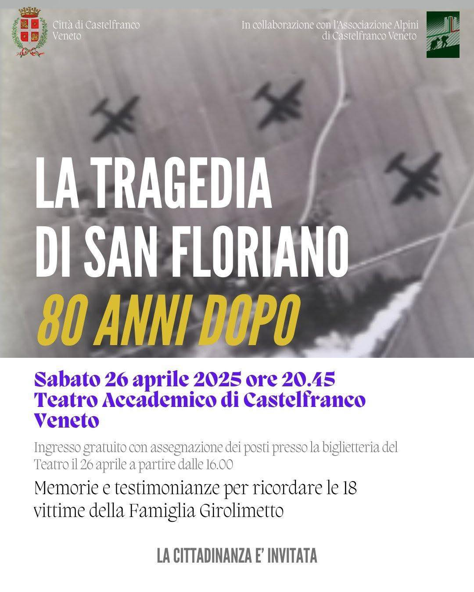

In questa sezione trovi aggiornamenti relativi al progetto “Custodire
la Memoria”, le iniziative in corso e le novità editoriali.
📘 Acquista il Libro
È ora disponibile il libro Custodire la Memoria, una
raccolta di testimonianze, immagini storiche e racconti legati alla
famiglia Girolimetto e alla tragedia del 1945. Il libro può essere
acquistato direttamente contattandoci o durante gli eventi pubblici al prezzo
simbolico di 10 euro.

Copertina del libro disponibile all'acquisto.
🎭 Incontro al Teatro di Castelfranco – Sabato 26
A 80 anni dalla Tragedia di S. Floriano, il 26 aprile alle 20:45 il Teatro Accademico ospita memorie
e testimonianze in ricordo delle 18 vittime della Famiglia Gerolimetto. Ingresso gratuito con assegnazione
posti dalle 16.00.
Per maggiori informazioni, visita la pagina dedicata all'evento sul sito del comune di Castelfranco Veneto.

Locandina dell'evento al Teatro Accademico di Castelfranco Veneto.